E X P E R I E N C E
MY EXPERIENCE
IN DIPLOMA LEVEL
'Learn from every mistake, because every experience, encounter and particularly your mistakes are there to teach you. ' – Oprah Winfrey
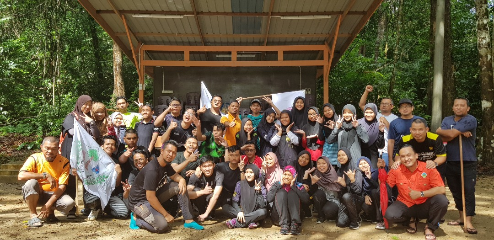 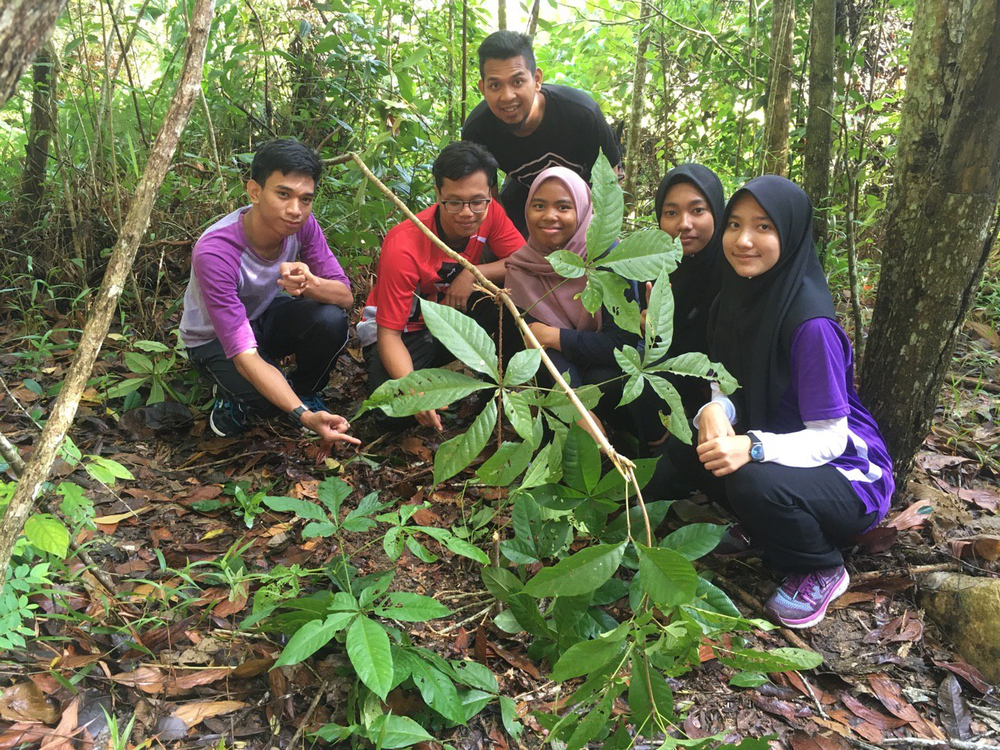PROGRAM MODUL KEPIMPINAN SURVIVAL UKP (2019)
From regular members to one of the excos. I have joined this club since semester 1 until semester 3 and I was upgraded to the post to become one of the solid members in this club. The pictures above is when the club organizing a survival program in 2019 at Kem Gemia UiTM Dungun Cawangan Terenganu and it lasted for 4 days and 3 nights.From this,I have learnt a lot of new things that i have never done before as I make news friends, news experience on how to survive and news version of me. It is a great experience to have.
TERENGGANU ULTIMATE FRISBEE CLUB (TUFT)
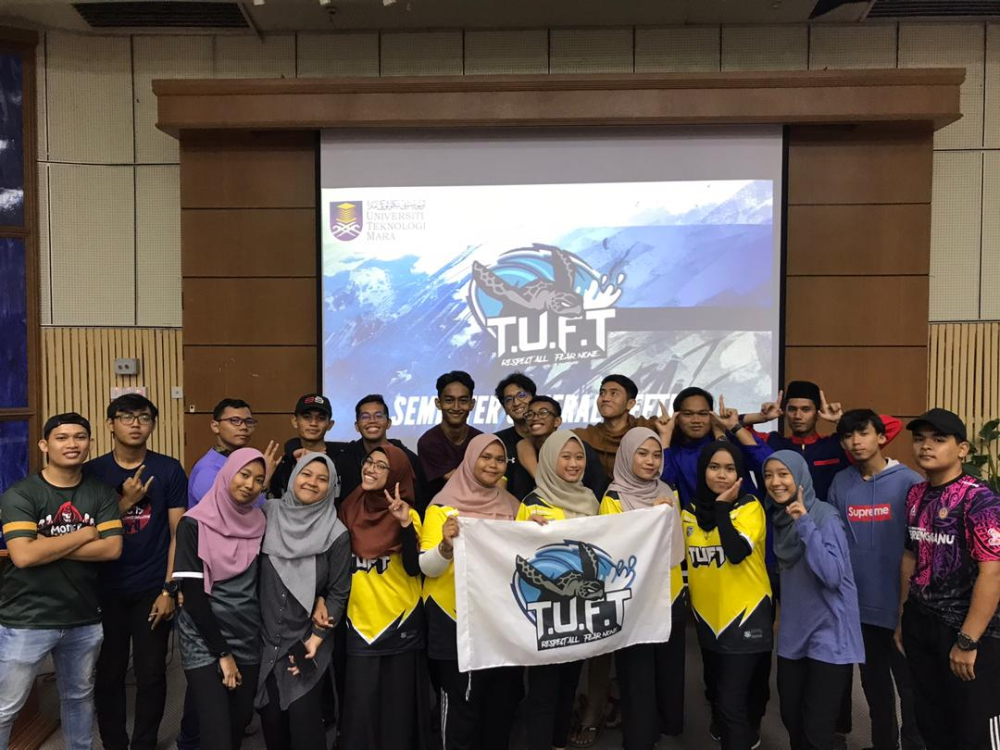 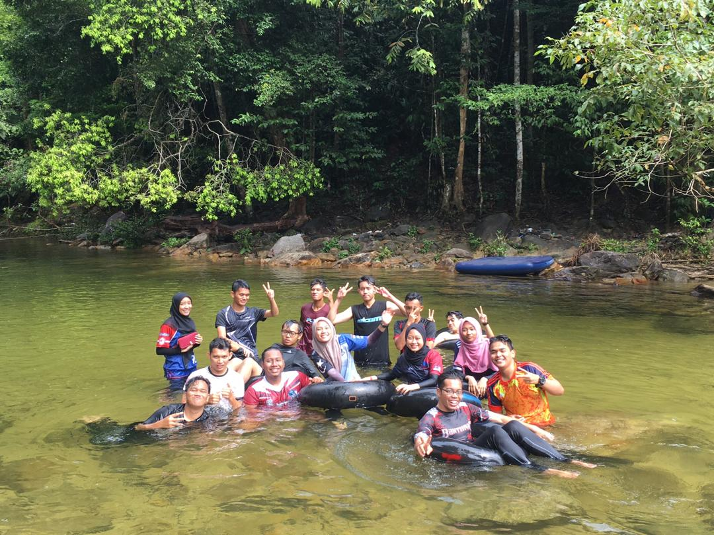 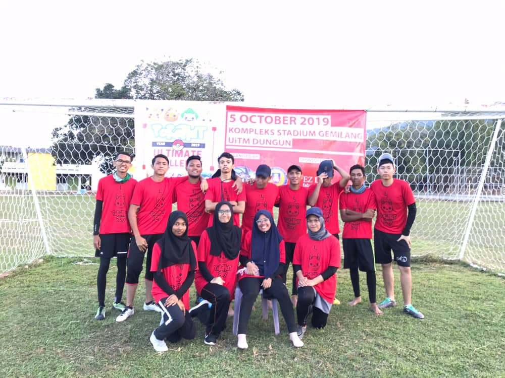 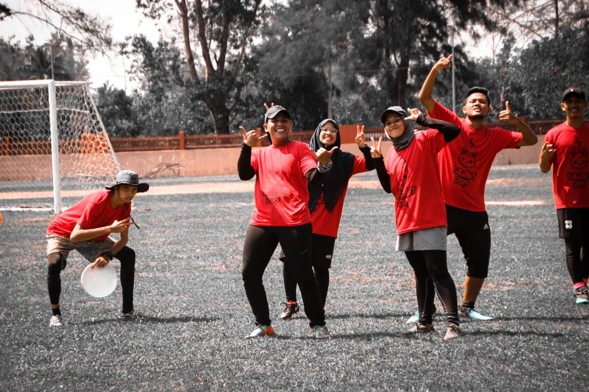 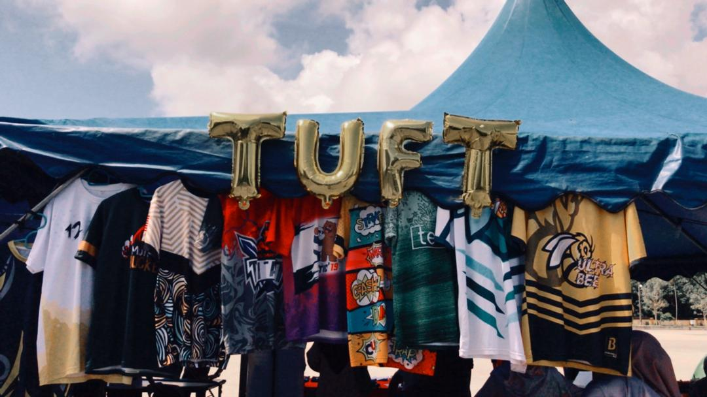In the non-academic club, I was given an opportunity to handle one of outdoor program in this club. The journey is the same as the academic club I once joined this club in semester 1 until I completing my diploma. In this club, I was given the task of program director. As the Program Director for our outdoor adventure, I navigated every detail to ensure a seamless and thrilling experience. From planning exciting activities to overseeing safety measures, my role was to turn moments into memories for all participants. It was a journey of coordination, enthusiasm, and creating an unforgettable outdoor escapade.Navigating the program's journey wasn't a walk in the park; challenges tested my resolve at every turn. But I am grateful that the program is still running and the program committee is giving their best and it was one of best moment during Diploma as I was given a big task and it also involves our off-campus participants which gives me a big responsibility in giving the best results and handle the program smoothly.It was an experience I will never forget.
IN DEGREE LEVEL
OLE-OLE CLUB
.jpg) 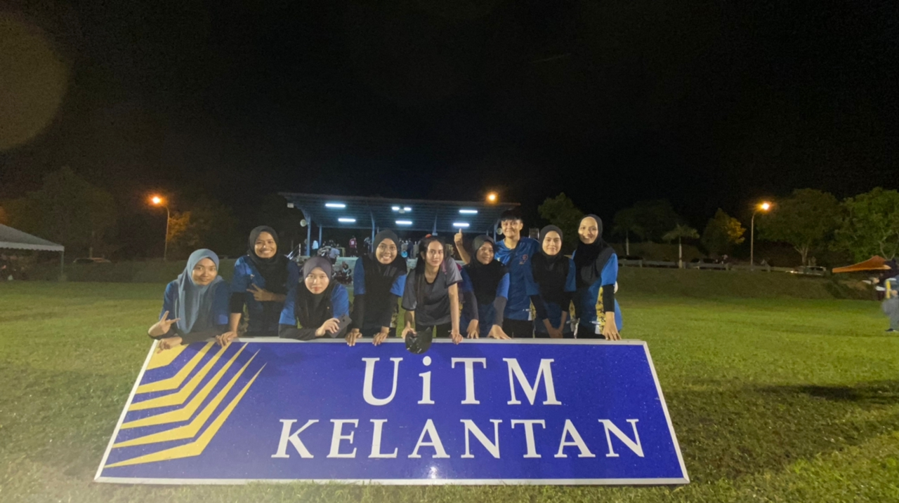
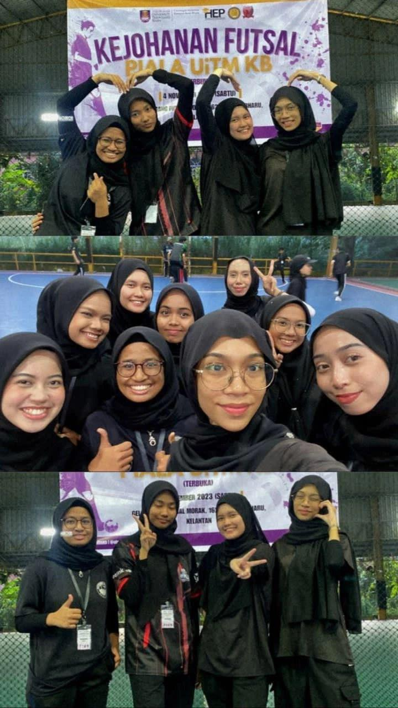
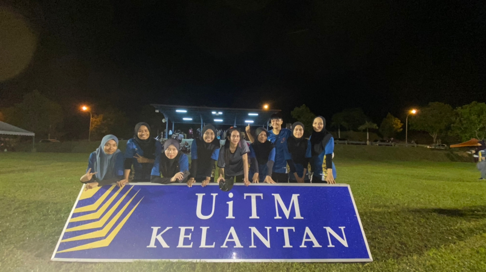
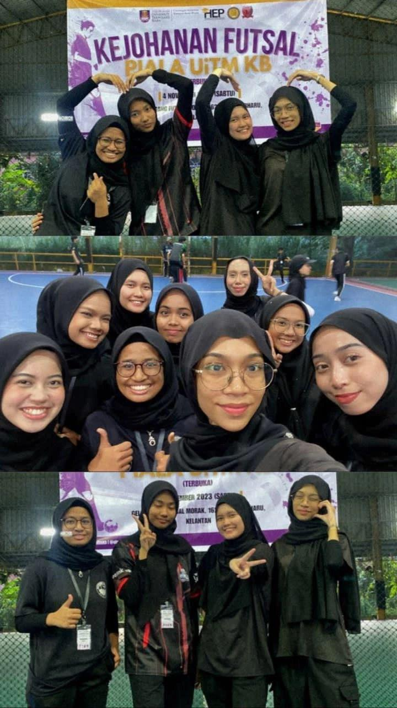
In this club, at first, I was reluctant to join this club because I thought the members of this club should be good at playing futsal, but I was completely wrong. there are many female members who are not good enough at playing this game. And I never thought of participating in some of the events contested by this club and luckily being able to bring back a medal. And recently, we have just organized the Kota Bharu cup futsal tournament and as newbie in this club, I was given a task as a committee member to help manage the process of the program running smoothly. It is a memory that I will never forget.